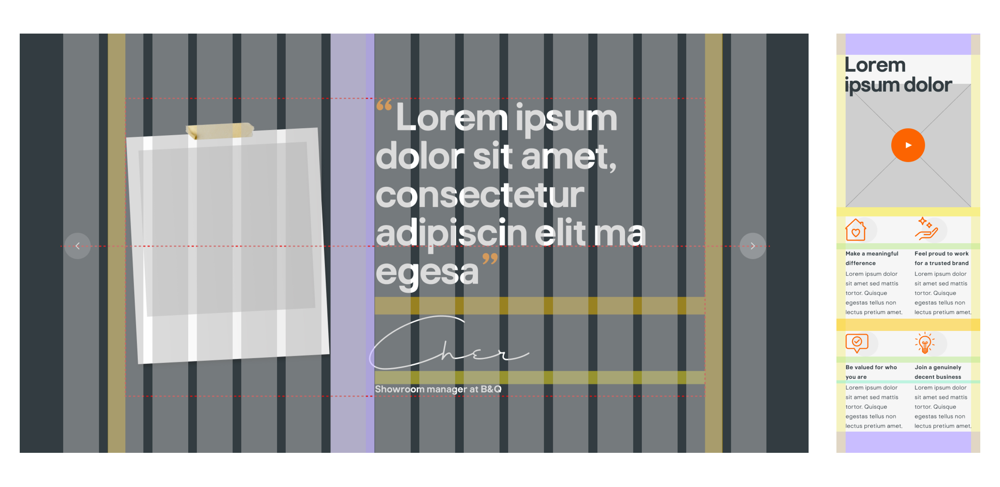

WEBSITE DESIGN – UX, UI
A new careers site for B&Q
The brief
B&Q needed a new careers site to introduce their new Employer Brand and improve the quality of applications by attracting more informed candidates who could effectively self-select themselves.
The new website should position them as a modern, digital retailer with a dedicated and diverse workforce.

Discovery
We started off analysing the performance of the current website, and we found the following insights:
We then conducted user research to understand how this translated into user needs and pains. Through a series of interviews, we discovered that candidates knew of B&Q as a big brand and valued it as such, but not as an employer.
We kept a close relationship with the client throughout the project, making sure that key stakeholders were involved in workshops and decision-making conversations. All this and other findings helped us map user journeys and shape the Information architecture (IA) and content strategy for the site.
- Indeed drove around 70% of B&Q’s traffic in 2019-2020.
- Brand search was responsible for a further 25% of user engagement.
- Over 70% of B&Q’s traffic were landing on an ATS job description.
We then conducted user research to understand how this translated into user needs and pains. Through a series of interviews, we discovered that candidates knew of B&Q as a big brand and valued it as such, but not as an employer.
We kept a close relationship with the client throughout the project, making sure that key stakeholders were involved in workshops and decision-making conversations. All this and other findings helped us map user journeys and shape the Information architecture (IA) and content strategy for the site.


Design
We wanted to rethink the traditional careers site, and create a highly personalised experience where users could discover their own version of the Together We Can, the new employer brand. To do this, we aggregated content dynamically on the site to ensure candidates engaged with the relevant brand messaging on their route to application, and took control of the job description pages (previously ATS territory)
We wanted to avoid irrelevant content and boring job descriptions at all costs and replaced them with tailored content that would immerse candidates into B&Q’s culture. We collaborated with the team at B&Q to produce user-generated content from employees that would communicate what working there was really like.
Job search was at the front and centre of the new homepage to ensure candidates could navigate to the right business area. We wanted to serve candidates with the right specific content to allow them to self-select themselves before applying, increasing the quality of applications.
We wanted to avoid irrelevant content and boring job descriptions at all costs and replaced them with tailored content that would immerse candidates into B&Q’s culture. We collaborated with the team at B&Q to produce user-generated content from employees that would communicate what working there was really like.
Job search was at the front and centre of the new homepage to ensure candidates could navigate to the right business area. We wanted to serve candidates with the right specific content to allow them to self-select themselves before applying, increasing the quality of applications.

Delivery
I developed a style guide and a small-scale design system based on modular components that will allow the client some flexibility to add new content to the site using the CMS when needed.
The overlapping of titles on the imagery was something that required special attention. Working closely with the tech team we made sure it was done right and it didn’t look awkward or broken. I prototyped some interactions and micro-animations to guide developers on the implementation.
The overlapping of titles on the imagery was something that required special attention. Working closely with the tech team we made sure it was done right and it didn’t look awkward or broken. I prototyped some interactions and micro-animations to guide developers on the implementation.

The results
On the first month after launch (December 2020), we saw:
Just after a few months of launching, we won the prestigious RAD award for best Employer Website 2021 and Employer Brand (National) 2021. Judges praised this website for being "eye catching, original and having lots of engagement whilst putting jobs at the heart of the site. A great site that was easy to use and fun."
- An average session duration on our JD pages of 2mins 38 seconds
- 2000 applications from 7,500 job description visits
- +2000 hours spent by users engaging with the brand
- +2000 video plays
- 10% apply-click to hire ratio
Just after a few months of launching, we won the prestigious RAD award for best Employer Website 2021 and Employer Brand (National) 2021. Judges praised this website for being "eye catching, original and having lots of engagement whilst putting jobs at the heart of the site. A great site that was easy to use and fun."

Role Lead Digital Designer
Responsibilities end-to-end website design (discovery, IA and sitemap, wireframing, design and prototyping)
Launch date December 2020
See it live bandqcareers.com
Responsibilities end-to-end website design (discovery, IA and sitemap, wireframing, design and prototyping)
Launch date December 2020
See it live bandqcareers.com